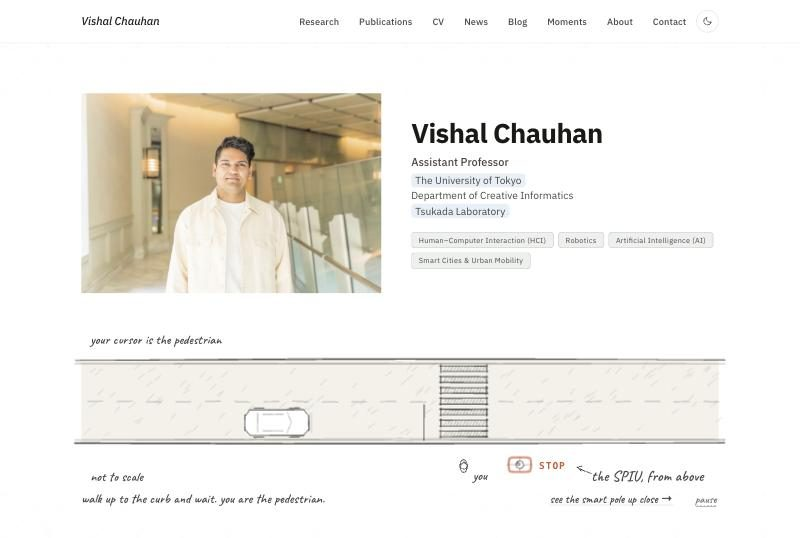
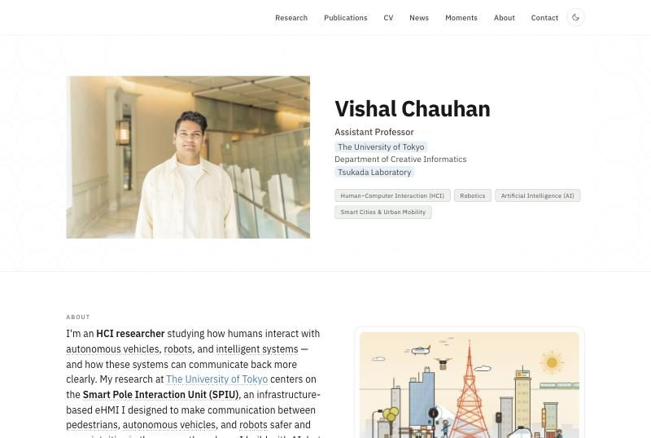
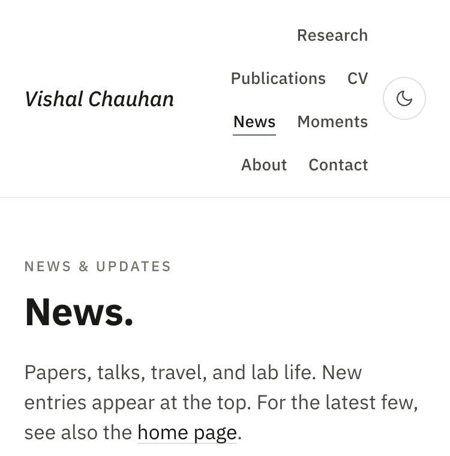
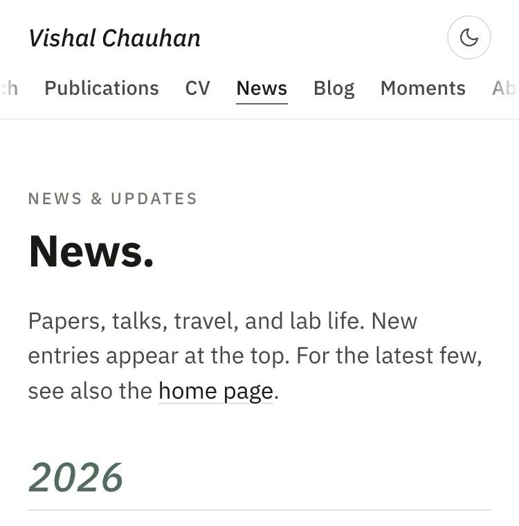

Blog · Nov 2026 · 3 min read
How to use Claude well: notes from rebuilding my website.

I rebuilt this website with Claude over a few days. The site got faster, it got a blog, and it finally works on a phone. I also had to undo a few things it did with full confidence.
Drag the line to see where I started.

same photo, same words. the street underneath is new: your cursor is the pedestrian.
Here is what I learned.
1. Give it real things, not adjectives
My first request was roughly “make it more engaging, less like AI”. What came back was polished and generic. Pill buttons, emoji, cards that lift when you hover.
It got good the moment I gave it real material: my photos, the CAD file of the smart pole, a sketch of the actual device, the technical drawing. Real things carry details that no description does.

2. The prompts that actually worked
Short, plain sentences. None of them clever.
Show me first, don’t update.
It builds a preview somewhere safe. Nothing on the real site changes.Only add. Don’t change my text.
The one I wish I had said on day one.Here is the real thing.
A photo, a PDF, a drawing. Better than any description.Why is it slow?
It measured instead of guessing, and found 55 MB of photos.Check it on a phone.
That is how we found the menu that took up a fifth of the screen.Open a PR, don’t merge.
Every change waits for me to say yes.
3. It will be confident and wrong
At one point it rewrote the news on my homepage. It looked fine at a glance. It was not mine.
what changed without me asking
… as the single sole Principal Investigator …
+ two lines under my name that I never wrote
+ my sections pushed below new ones
Nothing was lost, because everything lives in git. But I only noticed because I looked. Now I compare my own text before and after every change, and a check does it for me.
The lesson is not “don’t trust it”. It is: decide in advance what it is not allowed to touch, and say it.
4. Ask it to measure
“The site feels slow” is a feeling. Claude turned it into numbers: the publications page alone loaded 28 MB of images, because the paper figures were uploaded at print size. After shrinking them it was 246 KB. Same pictures, same filenames.
The phone menu was the same story. On the left, before: four rows of links eating the top of every page. On the right, after: one row you can swipe.


5. Build a safety net once
Every change now goes through a pull request. Automatic checks run on it: broken links, missing images, photos that are too big, pages that don’t match. GitHub refuses to merge until they pass. It took an afternoon to set up, and it means a bad change can’t quietly reach the live site.
6. Remember that it forgets
A new conversation starts from zero. So the rules live in writing: a short file in the project, and a few saved notes like “never delete or reword what I wrote”. Say it once, write it down, stop repeating yourself.
The short version
Treat it like a fast, eager colleague who has never seen your field. Give it real material. Ask to see before it changes anything. Check its work, especially the parts that look fine.
It saved me days. It also reminded me why I study how people come to trust machines: trust grows when a system shows what it is about to do, lets you undo it, and knows its limits.